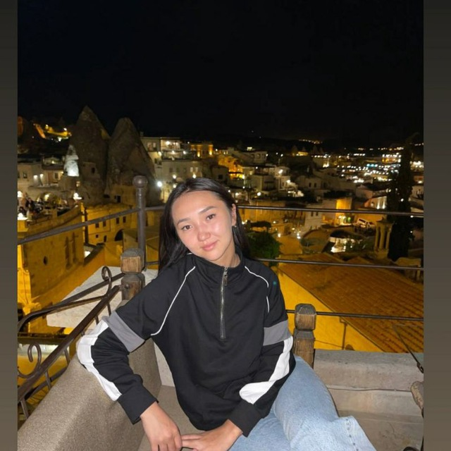
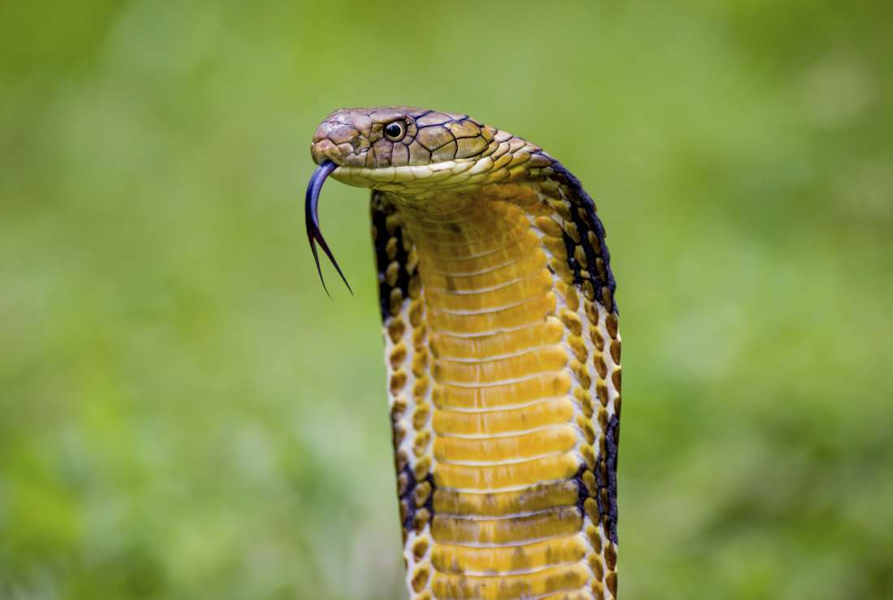
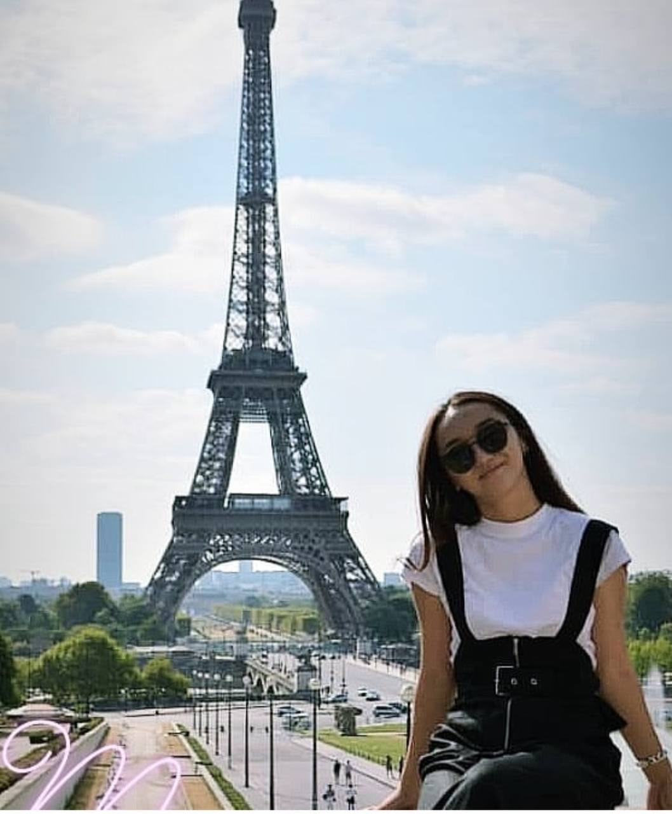
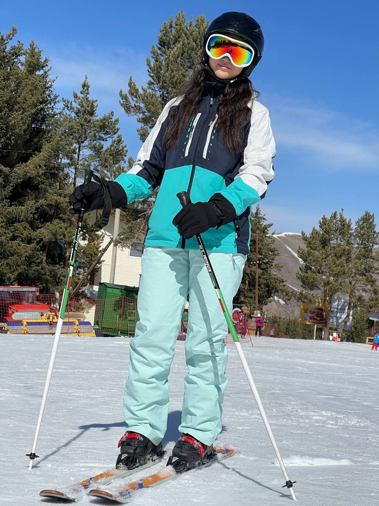
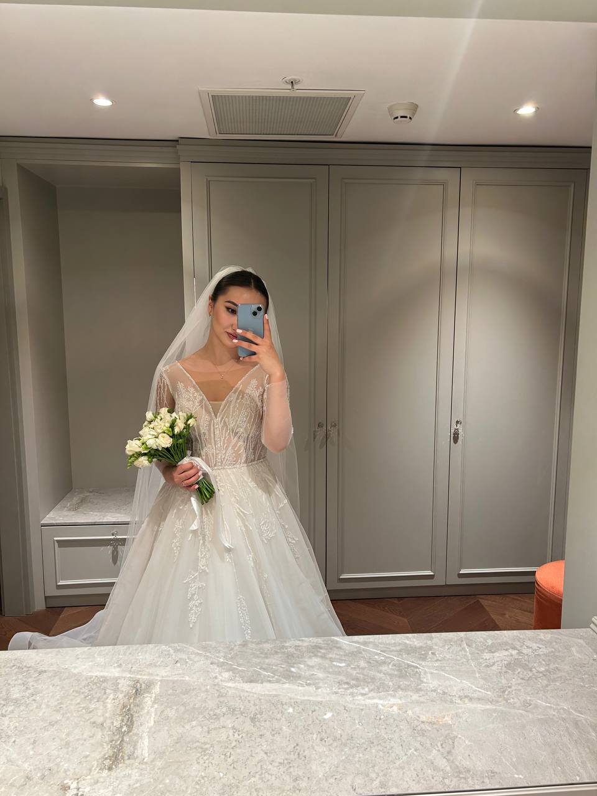

Айдай эже, родилась и выросла в городе Каракол
Иссык-кульская область. Работала администратором
в компании витаминов с Америки, ушла с хорошо
оплачиваемой работы специально для изучения IT.

Это она сейчас.
А в будущем буйруса она станет
вот такой вот.
Хобби и интересы в жизни:
Айдай эже любит читать книги и |
Ей нравиться слушать поп музыку 2000, |
А также она любить путишествовать |
Нуууууу это чисто доказательство |
|  |
Кстати она еще любит |

и потом следуещеедля показа следующего фото нажмите на ссылку ниже